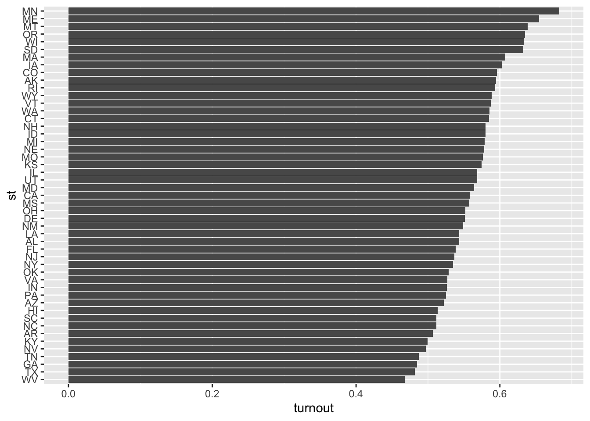
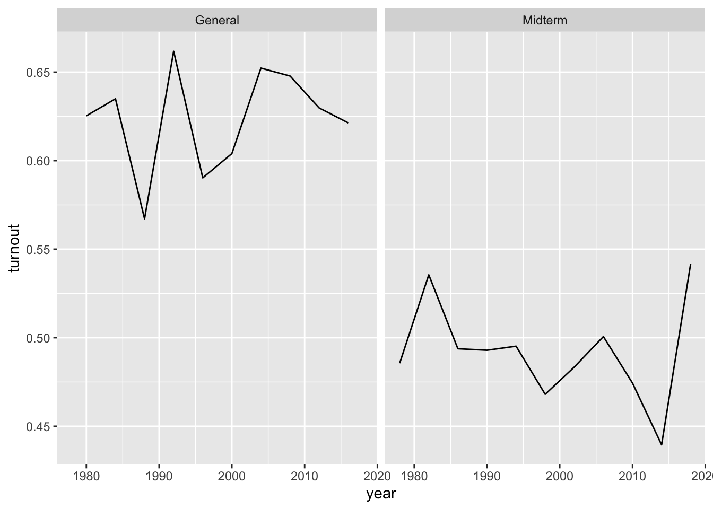
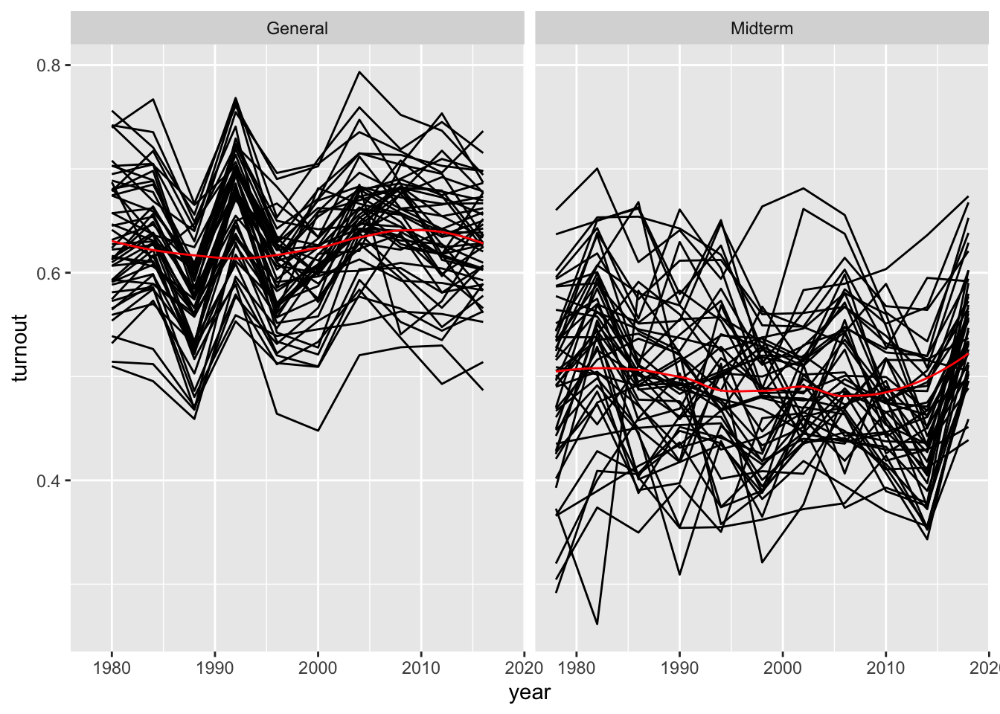
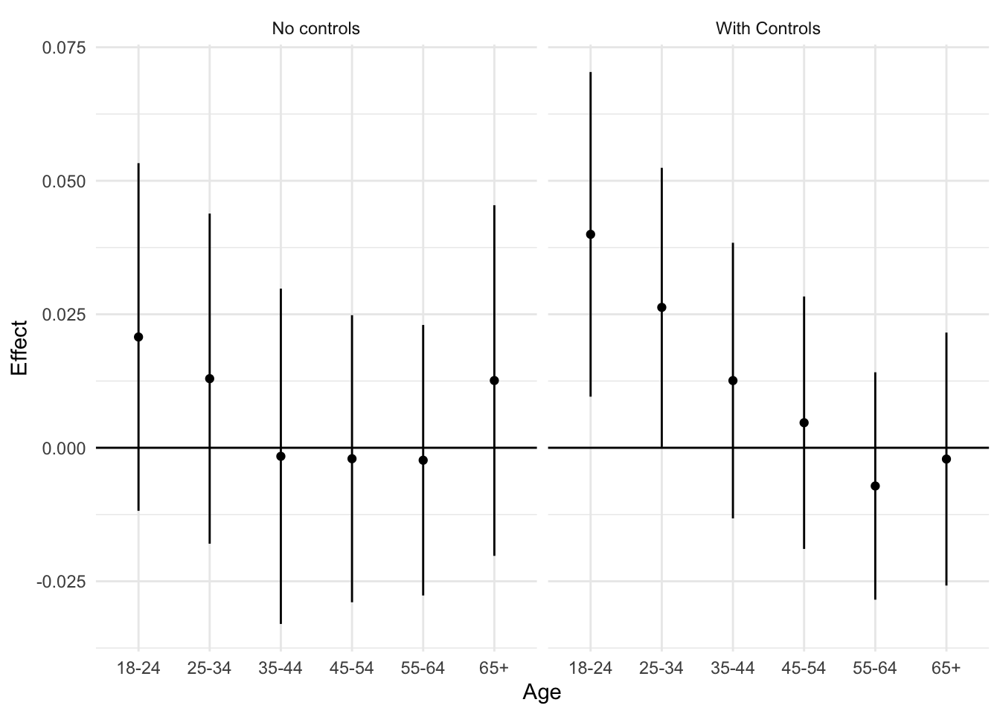

Lab 08 - Replicating Grumbach and Hill (2022):
Reproducing the results
Overview
In this lab, we continue our replication of Grumbach and Hill (2021) “Rock the Registration: Same Day Registration Increases Turnout of Young Voters.”
To accomplish this we will:
Load packages and set the working directory to where this file is saved. (5 minutes)
Summarize the study in terms of it’s research question, theory, design, and results. (10 minutes)
Download the replication files and save them in the same folder as this lab (5 minutes)
Load the data from your computers into R (5 minutes)
Get a quick HLO of the data (10 minutes)
Merge data on election policy into data on voting (5 minutes, together),
Recode the covariates, key predictors, and outcome for the study (10 minutes, partly together)
Recreate Figure 1 (15 minutes)
Recreate Figure 2 (15 minutes)
Finally, we’ll take the weekly survey which should be a fun one
One of these 8 tasks will be randomly selected as the graded question for the lab.
You will work in your assigned groups. Only one member of each group needs to submit the html file of lab.
This lab must contain the names of the group members in attendance.
If you are attending remotely, you will submit your labs individually.
Here are your assigned groups for the semester.
Goals
This week’s lab will give you practice:
Summarizing academic work (Q1)
Loading data into R from your own computer (rather than just downloading it from the web) (Q2-3)
Looking at new data and figuring out what you need to do (e.g. merging, recoding) before you can analyze it (Q4-6)
Creating and interpreting figures that summarize aspects of a study’s design and data (Q7-8)
Next week, we’ll get into the nuts and bolts of replicating Grumbach and Hill’s main results
Workflow
Please render this .qmd file
As with every lab, you should:
- Download the file
- Save it in your course folder
- Update the
author:section of the YAML header to include the names of your group members in attendance. - Render the document
- Open the html file in your browser (Easier to read)
- Write your code in the chunks provided under each section
- Comment out or delete any test code you do not need
- Render the document again after completing a section or chunk (Error checking)
- Upload the final lab to Canvas.
Get set up to work
Load packages
As always, let’s load the packages we’ll need for today
the_packages <- c(
## R Markdown
"kableExtra","DT","texreg","htmltools",
## Tidyverse
"tidyverse", "lubridate", "forcats", "haven", "labelled",
## Extensions for ggplot
"ggmap","ggrepel", "ggridges", "ggthemes", "ggpubr",
"GGally", "scales", "dagitty", "ggdag", "ggforce",
# Data
"COVID19","maps","mapdata","qss","tidycensus", "dataverse",
"janitor",
# Analysis
"DeclareDesign", "easystats", "zoo","margins",
"modelsummary", "ggeffects"
)
# Define function to load packages
ipak <- function(pkg){
new.pkg <- pkg[!(pkg %in% installed.packages()[, "Package"])]
if (length(new.pkg))
install.packages(new.pkg, dependencies = TRUE)
sapply(pkg, require, character.only = TRUE)
}
ipak(the_packages) kableExtra DT texreg htmltools tidyverse
TRUE TRUE TRUE TRUE TRUE
lubridate forcats haven labelled ggmap
TRUE TRUE TRUE TRUE TRUE
ggrepel ggridges ggthemes ggpubr GGally
TRUE TRUE TRUE TRUE TRUE
scales dagitty ggdag ggforce COVID19
TRUE TRUE TRUE TRUE TRUE
maps mapdata qss tidycensus dataverse
TRUE TRUE TRUE TRUE TRUE
janitor DeclareDesign easystats zoo margins
TRUE TRUE TRUE TRUE TRUE
modelsummary ggeffects
TRUE TRUE 1 Load the data
# Set working directory to source file location
# Load data (assumes a file called `cps_clean.rda` is in the same folder as this lab)
# # BACKUP: Uncomment if you're having trouble you can load a version of the data from the web:
load(url("https://pols1600.paultesta.org/files/data/cps_clean.rda"))2 Create addtional variables
presidential_elections <- seq(1980, 2016, by = 4)
cps %>%
mutate(
st_f = factor(st),
year_f = factor(year),
election_type = ifelse(year %in% presidential_elections, "General","Midterm"),
SDR = ifelse(sdr == 1, "SDR","non-SDR"),
age_group = fct_relevel(age_group, "65+")
) -> cps3 Describing variation by state, year, and age
3.1 State
# Create dataframe of average voting rates by state
cps %>%
group_by(st) %>%
summarise(
turnout = mean(dv_voted, na.rm=T)
) %>%
mutate(
st = fct_reorder(st, turnout)
) -> df_state
df_state %>%
ggplot(aes(turnout,st))+
geom_bar(stat = "identity")
3.2 Variation over time
cps %>%
group_by(year, election_type ) %>%
summarise(
turnout = mean(dv_voted, na.rm=T)
) -> year_df
year_df %>%
ggplot(aes(year, turnout)) +
geom_line() +
facet_grid(~election_type)
3.3 Variation over state and time
cps %>%
group_by(year, st, election_type ) %>%
summarise(
turnout = mean(dv_voted, na.rm=T)
) -> year_state_df
year_state_df %>%
ungroup() %>%
ggplot(aes(year, turnout, group=st)) +
geom_line()+
stat_smooth(geom = "line", col = "red",aes(group = NULL))+
facet_grid(~election_type)
4 Understanding Two-Way Fixed Effects Regression
4.1 Estimate a simple model
m1 <- lm_robust(dv_voted ~ sdr,
data = cps,
se_type = "classical")
m2 <- lm_robust(dv_voted ~ sdr,
data = cps,
se_type = "stata",
fixed_effects = ~ st + year,
try_cholesky = T)
m3 <- lm_robust(dv_voted ~ sdr,
data = cps,
fixed_effects = ~ st + year,
se_type = "stata",
clusters = st,
try_cholesky = T)modelsummary(list(m1,m2,m3))| (1) | (2) | (3) | |
|---|---|---|---|
| (Intercept) | 0.548 | ||
| (0.000) | |||
| sdr | 0.062 | 0.007 | 0.007 |
| (0.001) | (0.002) | (0.014) | |
| Num.Obs. | 1988501 | 1988501 | 1988501 |
| R2 | 0.002 | 0.028 | 0.028 |
| R2 Adj. | 0.002 | 0.028 | 0.028 |
| AIC | 2859151.1 | 2804888.5 | 2804888.5 |
| BIC | 2859188.6 | 2804913.5 | 2804913.5 |
| RMSE | 0.50 | 0.49 | 0.49 |
| Std.Errors | by: st |
5 Replicate two models from Figure 3
m1gh <- lm_robust(dv_voted ~ sdr*age_group,
data = cps,
fixed_effects = ~ st + year,
se_type = "stata",
clusters = st,
try_cholesky = T
)
m2gh <- lm_robust(dv_voted ~ sdr*age_group +
factor(race) + sex + faminc + educ,
data = cps,
fixed_effects = ~ st + year,
se_type = "stata",
clusters = st,
try_cholesky = T
)5.1 Marginal Effects of Interactions
me_fn <- function(mod, cohort, ci=0.95){
# Confidence Level for CI
alpha <- 1-ci
z <- qnorm(1-alpha/2)
# Age (Always one for indicator of specific cohort)
age <- 1
# Variance Covariance Matrix from Model
cov <- vcov(mod)
# coefficient for SDR (Marginal Effect for reference category: 65+)
b1 <- coef(mod)["sdr"]
# If age is one of the interactions
if(cohort %in% c("18-24","25-34","35-44","45-54","55-64")){
# get the name of the specific interaction
the_int <- paste("sdr:age_group",cohort,sep="")
# the coefficient on the interaction
b2 <- coef(mod)[the_int]
# Calculate marginal effect for age cohort
me <- b1 + b2*age
me_se <- sqrt(cov["sdr","sdr"] + age^2*cov[the_int,the_int] + 2*age*cov["sdr",the_int])
ll <- me - z*me_se
ul <- me + z*me_se
}
if(!cohort %in% c("18-24","25-34","35-44","45-54","55-64")){
me <- b1
me_se <- mod$std.error["sdr"]
ll <- mod$conf.low["sdr"]
ul <- mod$conf.high["sdr"]
}
res <- tibble(
Age = cohort,
Effect = me,
SE = me_se,
ll = ll,
ul = ul
)
return(res)
}the_age_groups <- levels(cps$age_group)
the_age_groups %>%
purrr::map_df(~me_fn(m1gh, cohort=.)) %>%
mutate(
Age = factor(Age),
Model = "No controls"
) -> fig3_no_controls
the_age_groups %>%
purrr::map_df(~me_fn(m2gh, cohort=.)) %>%
mutate(
Age = factor(Age),
Model = "With Controls"
) -> fig3_controls6 Recreate Figure 3
fig3_df <- fig3_no_controls %>% bind_rows(fig3_controls)
fig3_df %>%
ggplot(aes(Age, Effect))+
geom_point()+
geom_linerange(aes(ymin = ll, ymax =ul))+
geom_hline(yintercept = 0)+
theme_minimal()+
facet_wrap(~Model)
7 Scratch
Play around with code:
# Timing of that adoption
#
# cps %>%
# group_by(st,year) %>%
# summarize(
# sdr = max(sdr),
# ) %>%
# ungroup() %>%
# group_by(st) %>%
# mutate(
# sdr_state = max(sdr)
# ) %>%
# mutate(
# sdr_year = case_when(
# sdr == 1 & lag(sdr) == 0 ~ year,
# T ~ NA
# )
# ) %>%
# fill(sdr_year, .direction = "updown") %>%
# mutate(
# time_to_sdr = year - sdr_year,
# lag_00yr = case_when(
# time_to_sdr==0 ~ 1,
# T ~ 0),
# lag_02yr = case_when(
# time_to_sdr==-2 ~ 1,
# T ~ 0),
# lag_04yr = case_when(
# time_to_sdr==-4 ~ 1,
# T ~ 0),
# lag_06yr = case_when(
# time_to_sdr==-6 ~ 1,
# T ~ 0),
# lag_08yr = case_when(
# time_to_sdr==-8 ~ 1,
# T ~ 0),
# lag_10yr = case_when(
# time_to_sdr==-10 ~ 1,
# T ~ 0),
# lag_12yr = case_when(
# time_to_sdr==-12 ~ 1,
# T ~ 0),
# lag_14yr = case_when(
# time_to_sdr==-14 ~ 1,
# T ~ 0),
# lag_16yr = case_when(
# time_to_sdr==-16 ~ 1,
# T ~ 0),
# lag_18yr = case_when(
# time_to_sdr==-18 ~ 1,
# T ~ 0),
# lag_20yr = case_when(
# time_to_sdr==-20 ~ 1,
# T ~ 0),
# lead_02yr = case_when(
# time_to_sdr == 2 ~ 1,
# T ~ 0),
# lead_04yr = case_when(
# time_to_sdr == 4 ~ 1,
# T ~ 0),
# lead_06yr = case_when(
# time_to_sdr == 6 ~ 1,
# T ~ 0),
# lead_08yr = case_when(
# time_to_sdr == 8 ~ 1,
# T ~ 0),
# lead_10yr = case_when(
# time_to_sdr == 10 ~ 1,
# T ~ 0),
# lead_12yr = case_when(
# time_to_sdr == 12 ~ 1,
# T ~ 0),
# lead_14yr = case_when(
# time_to_sdr == 14 ~ 1,
# T ~ 0),
# lead_16yr = case_when(
# time_to_sdr == 16 ~ 1,
# T ~ 0),
# lead_18yr = case_when(
# time_to_sdr == 18 ~ 1,
# T ~ 0),
# lead_20yr = case_when(
# time_to_sdr == 20 ~ 1,
# T ~ 0),
# ) -> sdr_event_df
#
#
# cps <- cps %>% left_join(sdr_event_df %>% select(-sdr))
#
#
# m_es <- lm_robust(dv_voted ~ -1 + sdr:lag_04yr + sdr:lag_02yr + sdr:lag_00yr + sdr:lead_02yr + sdr:lead_04yr,
# cps)
# m_es
#
# tmp <- read_csv("~/Downloads/data/Most-Recent-Cohorts-Institution.csv")
# tmp$INSTNM[1:10]